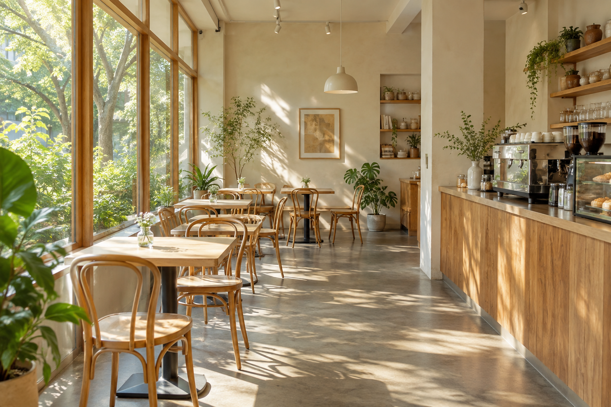
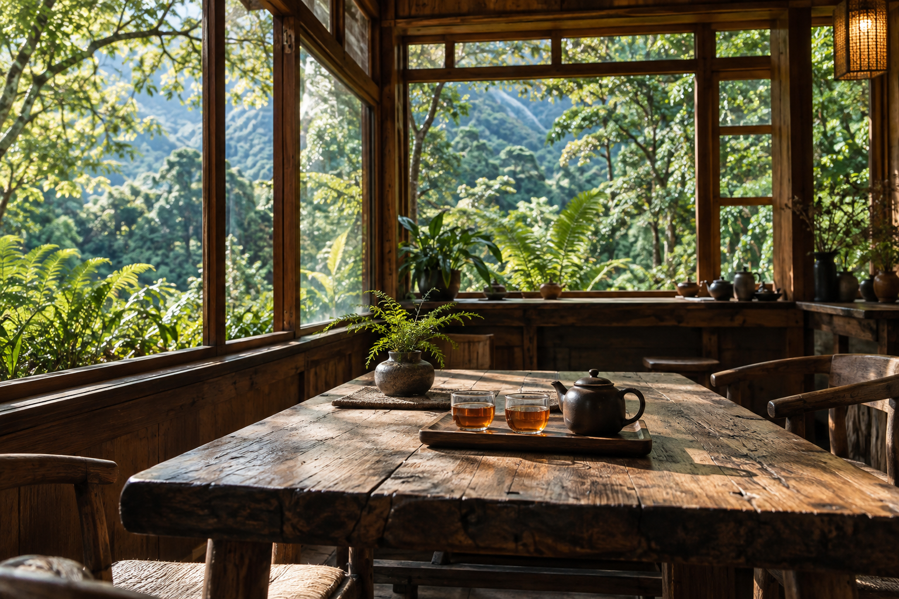

階段一｜整理分散的連結
- 問題
- 喜歡的地點散落在社群與對話，難以回頭整理。
- 決策
- 先建立以地點為核心的收藏清單，來源網址完整保留。
- 結果
- 連結不再只是書籤，而能進入整理與規劃流程。
收藏很多，
真正去過的很少。
我們把想去的店、景點與行程散落在社群貼文、Google Maps 和訊息裡。時間久了，不只找不到，還很難一起決定下一站。一起走走把「收到靈感」到「真的走過」放回同一條流程。
不是再做一個收藏箱，而是讓收藏能被整理、決定、走過。
| 問題 | 採用 | 曾考慮 | 原因 |
|---|---|---|---|
| 如何快速驗證核心流程？ | 先以 local-first 原型驗證，再建立兩人 Beta | 一開始就完成通用多人平台 | 先把收藏、整理、地圖與日誌跑通，再承擔帳號與同步成本。 |
| 如何確保地點資訊正確？ | 證據不足就保留待整理，不猜地址或分店 | 自動推測所有地點 | 相似店名與多分店容易誤判；可信比看起來完整重要。 |
| 如何公開展示但不暴露真實資料？ | 獨立、無登入的虛構 Demo | 直接開放兩人 Beta | 作品集保留完整操作感，同時隔離私人收藏與帳號。 |
公開邊界：作品集 Demo 不會呼叫正式 Beta、Supabase、Google Maps 或社群網站。正式 Beta 僅供兩個受邀帳號使用，與公開示範版完全分開。

森日咖啡臺北市 · 想去
山間茶屋南投縣 · 已到訪我｜茶很好喝，窗外很安靜。
她｜很適合慢慢待一個下午。